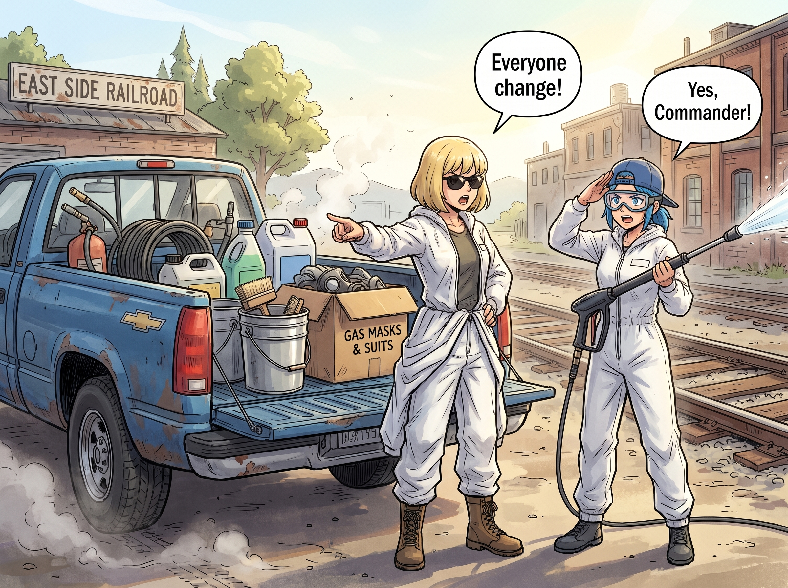

鋼鐵復甦大作戰

週六一早，那輛老雪佛蘭皮卡滿載著戰鬥物資再次轟鳴著駛入東區鐵道。
後斗裡堆滿了高壓水槍、鋼絲刷、工業吸塵器、幾大桶防銹底漆、Kate 自製的檸檬草驅蟲噴霧，以及 Victoria 專程叫貨拉來的一整箱專業防毒面具與白色防護連身服。
「全員換裝，」Victoria 踩著工裝靴跳下副駕駛，將四套連身服「啪」地拍在發動機蓋上，戴上墨鏡發號施令，「裡面的鐵鏽粉塵和老橡木霉菌濃度嚴重超標。誰要是敢不戴面具進去，今天午餐的黑松露帕尼尼就沒她的份。」
「遵命，總指揮官！」Chloe 迅速套上白色連身服，頭上卻依然反戴著那頂破舊的藍色棒球帽，護目鏡往下一拉，手裡端起接好臨時水管的高壓水槍，氣勢洶洶得像個準備去清理外星基地的星際陸戰隊員，「開工！讓這台老爺車重新呼吸！」
一場分工明確、火花與泥水四濺的「鋼鐵復甦大作戰」正式打響。
一、外部暴力除鏽與沖洗
「滋————！」
高壓水槍噴射出白色的高速水柱，混合著泥沙與陳年青苔，狠狠沖刷在車廂斑駁的深紅色鋼板上。
Chloe 雙手穩穩壓住後座力，對準頑固的鏽斑猛烈噴射，隨後換上氣動鋼絲輪打磨機，刺耳的呼嘯聲伴隨著橘紅色的微小火星在鋼板接縫處炸開，將七十年前的厚重鐵鏽一層層剝離，露出金屬原本冷硬扎實的銀灰色。
二、內部深度除塵與防護
車廂內部，Victoria 與 Max 戴著防毒面具，拉著工業吸塵器的長管，地毯式清理著橡木地板縫隙裡的陳年木屑與煤灰。
「地板縫隙裡還有 0.5 毫米的積碳，」Victoria 手裡拿著強光手電筒逐一檢查，指揮著 Max，「吸頭壓低，沿著木紋走。等底層吸乾淨，下午我們要用亞麻仁油和天然蜂蠟進行第一遍封層，這樣才能保留這種老木頭獨有的深琥珀色。」
Max 握著吸塵器管子，雖然滿頭大汗，但黑框眼鏡後的眼睛卻亮晶晶的，時不時趁著灰塵在光束中舞動的瞬間，掏出掛在胸前的相機抓拍下 Victoria 嚴肅指揮的模樣。
三、車廂外的自然拓荒
車廂外的碎石鐵軌旁，Kate 戴著厚實的園藝手套，提著 Chloe 之前為她手工雕刻的木箱，正揮舞著小鋤頭清理著瘋長的野草。
她在鐵軌兩側開闢出兩道整齊的長條形花槽，填入調配好的鬆軟腐殖土，小心翼翼地種下一株株耐旱的藍紫色薰衣草、叢生百里香與向日葵幼苗。「有了這些，」Kate 直起腰擦了擦額頭的汗水，笑著對窗內的眾人喊道，「泥土的香氣很快就能壓過鐵鏽味啦！」
四、靈魂的第一筆色彩
到了下午四點，整節車廂從裡到外被清理得煥然一新。
西斜的金色陽光透過巨大的天窗灑進來，橡木地板散發著溫潤的植物油香，鋼製骨架上的毛刺全被水砂紙打磨得光滑圓潤。
Chloe 撬開了一大桶深灰色的啞光防銹金屬底漆，遞給每人一把大滾刷。
「現在，進行最後的加冕儀式。」Chloe 率先在車廂外側最顯眼的鋼板中央刷下了一道厚重有力的深灰色筆觸。
Max 緊隨其後，笑著在旁邊補上了一大片均勻的色塊；Kate 墊著腳尖，在上方細心地修補邊角；而 Victoria 則接過滾刷，以無可挑剔的專業手法將整面漆層拉得平整如絲。
夕陽將波特蘭東區的舊鐵道染成一片醉人的鎢金色。
四個人脫下防護服，臉上、手臂上都沾著斑斑點點的灰漆與灰塵，並排坐在車廂打開的木質滑門邊緣，雙腿懸空晃盪著，手裡捧著 Kate 帶來的冰鎮薄荷檸檬茶和大塊帕尼尼。
涼爽的晚風吹過鐵軌旁的薰衣草幼苗，帶來了泥土與植物的清新氣息，與身後漸漸乾透的底漆味交織在一起。
Chloe 咬了一大口帕尼尼，長臂一攬摟住身邊的 Max，轉頭看著身邊雖然疲憊卻滿眼帶笑的 Kate 和 Victoria，嘴裡含糊不清地大笑起來：
「看啊，姑娘們——我們的火車，已經開始往前開了！」